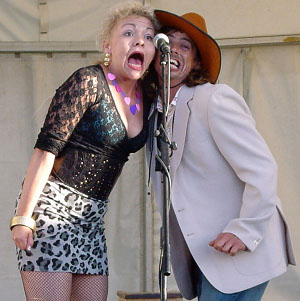

Fat Shirley brings her enormous story to Edinburgh's Free Fringe! Edinburgh's Free Fringe, 10th - 23rd of August 2015 Grab a copy of our Free Fringe Flier! Reviews from Alma Tavern Pub Theatre, Dec 2014 This bluegrass musical continues to be performed by the only bluegrass theatre company in the UK, a unique show that has delighted festival and theatre audiences for over 8 years and continues to attract more fans. Strung together with songs provided by Bristol Bluegrass / Americana band, The Hogranch, Fat Shirley's will keep you smiling long after the trailer park residents have said, "good night y'all!" The Hogranch's next performance is on Saturday, the 29th August at The Bootlegger on Cheltenham Road in Bristol. Follow our Tour Dates Link to catch our next performances. The Three Chords Theatre Company is a self owned collective of professional actors, musicians, producers and artists based in Bristol dedicated to bringing unknown and original works to a wider audience. | |
| Share on Facebook | |
| All images and content © The Three Chords Theatre Company. Website design by us. |